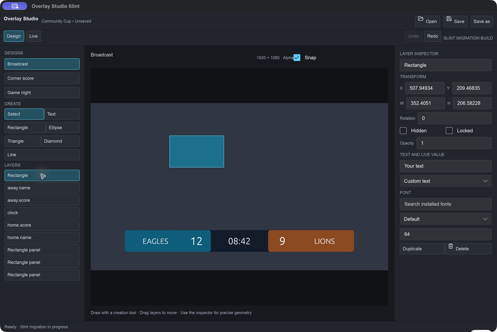
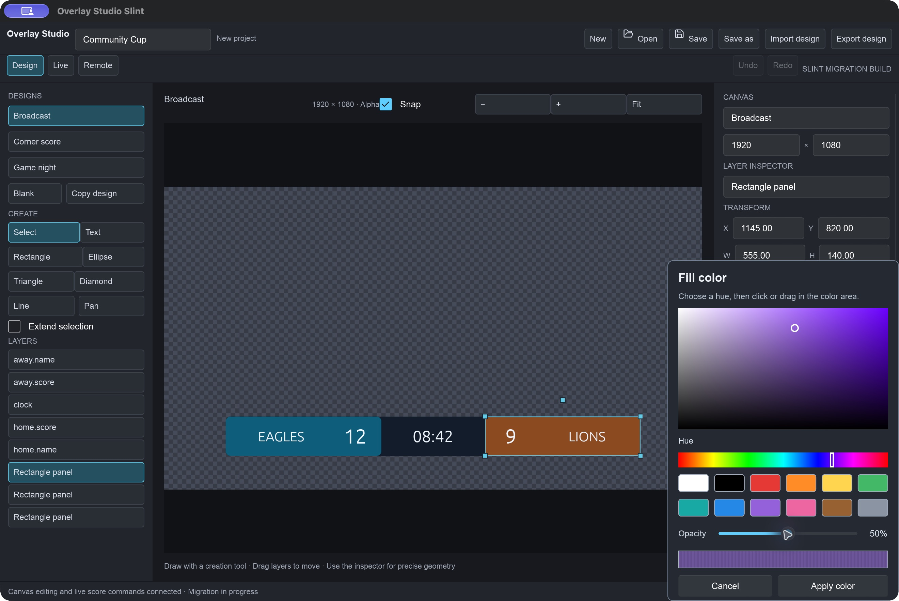
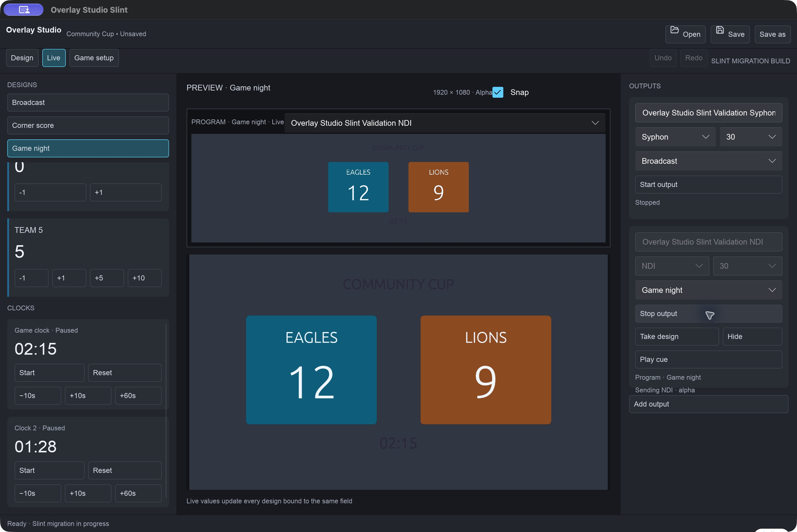
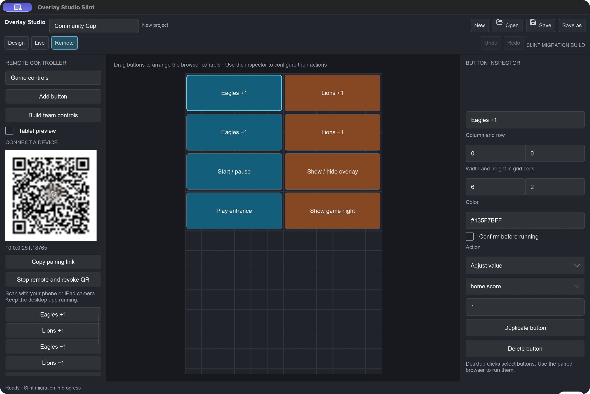
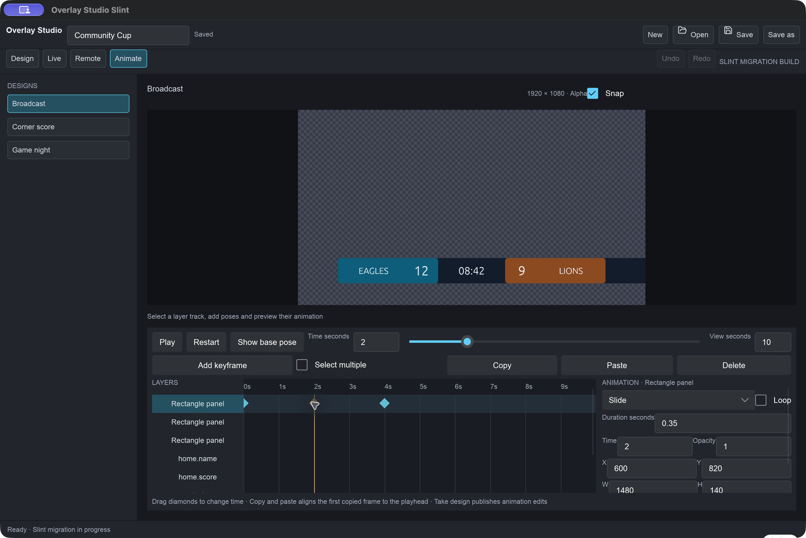

Broadcast-ready scoreboards, live over NDI
Design transparent scoreboards on macOS, run scores and clocks in real time, control from your phone, and send it all into ProPresenter or any NDI/Syphon receiver.
Download for macOS Game night how-to Read the manual
Everything a live game desk needs
One app from layout to on-air, with a transparent output that composites cleanly over video.
Transparent output
Checkerboard and editing handles are never transmitted. Empty areas stay alpha for clean compositing.
NDI & Syphon
Run independent outputs and take your design to air with one click.
Live bindings
Bind text and layers to scores, clocks and custom fields. One project drives many layouts.
Phone & iPad remote
Lay out a button grid, scan the QR code on your network, and run the game from anywhere in the venue.
Animation & events
Keyframe layers on a timeline, then trigger cues automatically from score or clock events.
Safe by default
Import images and short video clips, and recover unsaved work after an unexpected quit.
Design
Build canvases with text, shapes, images and video. Style every layer with a full color picker and bind it to live game values.

Go live
Operate teams, scoring steps and clocks from the live desk. Start, hide or stop each output independently, and Take design to publish.

Control from anywhere
Design your own remote layout and pair a phone or iPad in seconds over the local network.

Animate & automate
Motion on a keyframe timeline, with event rules that react when the score changes or the clock hits a mark.

Game night, ready out of the box
Five teams, five layouts, a prize wheel, score effects and sounds. Open the app and you are already set up. Built for volunteers running a church game night through ProPresenter.
Live desk
Switch layouts, add points, run the clock and start the NDI output. Every point flashes the team's tiles green or black, with sound.

Prize wheel
Spin, remove the winner so nothing repeats, and restore the list. Also on the phone remote.

Step-by-step for volunteers
Install, name your teams, add Overlay Studio to ProPresenter, run the night, and a pre-show checklist, all with pictures.
Open the game night how-to Printable PDFOn air with ProPresenter in four steps
The game night how-to walks through every step with pictures; the PDF manual covers the rest.
- Start an NDI output in Live.
- Click Take design to publish the current canvas.
- In ProPresenter, open Settings → Inputs and add a Video Input using the Overlay Studio NDI source.
- Trigger it from the Video Input playlist.
Get Overlay Studio
Open the DMG, drag the app into Applications. If macOS blocks first launch, right-click the app → Open.
Download v0.3.0 (DMG) View source